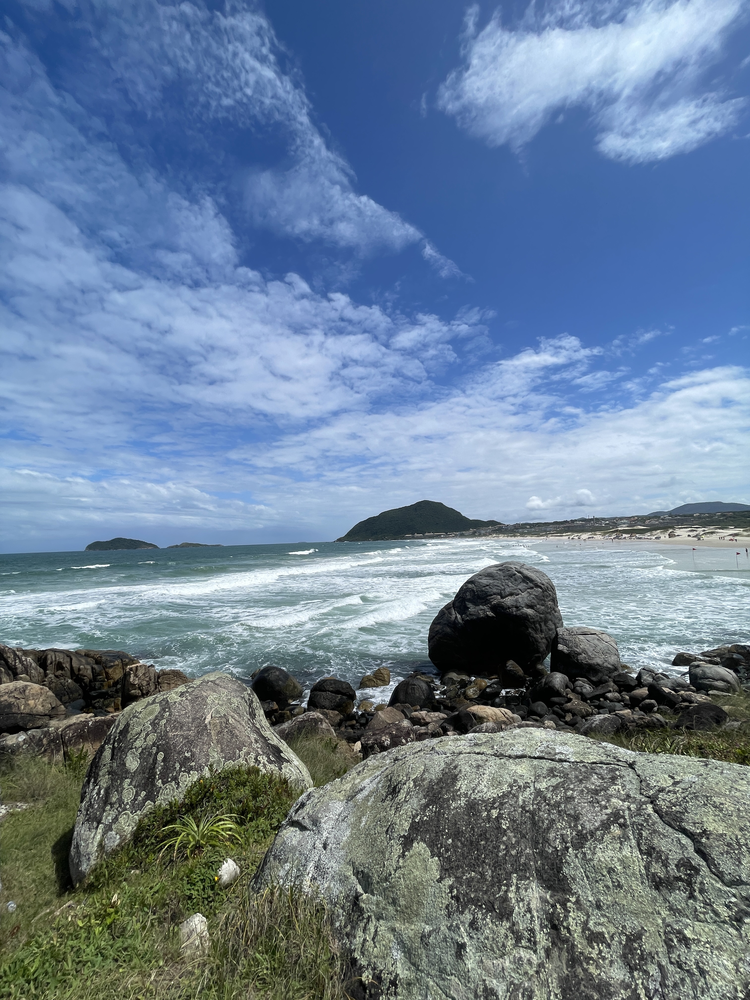
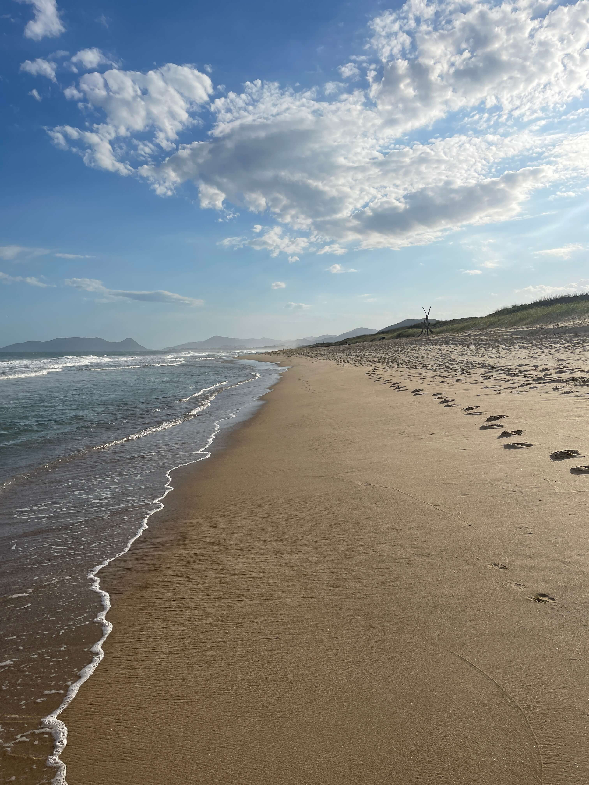
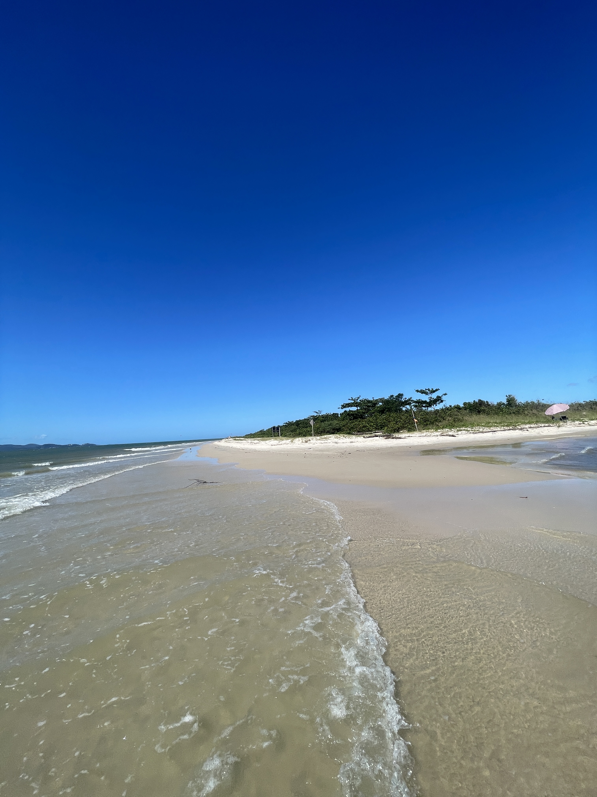
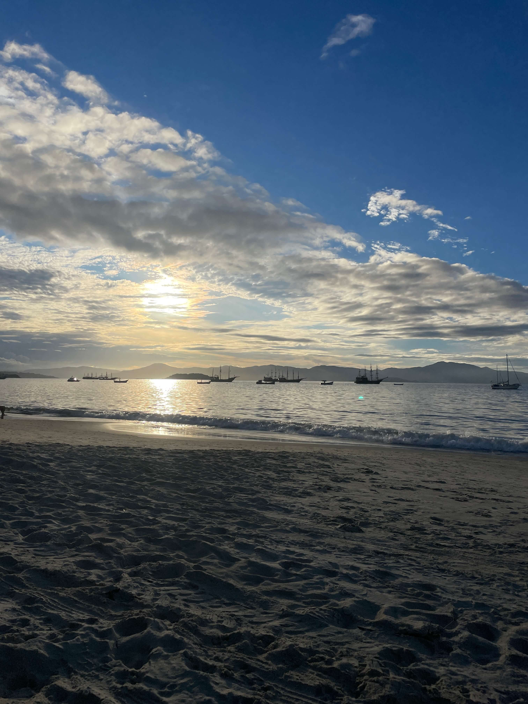
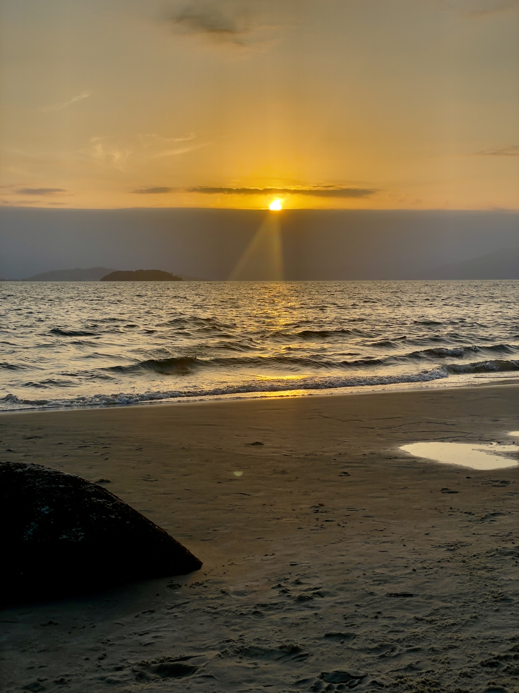
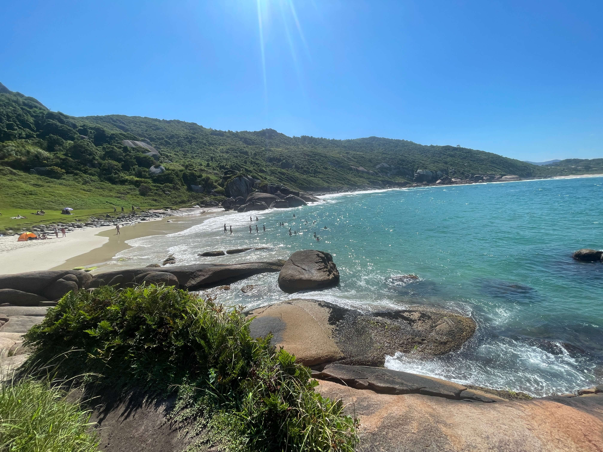

Las mejores playas As melhores praias
Floripa tiene más de 40 playas. Acá te cuento mis favoritas — con y sin olas — para que no pierdas tiempo eligiendo. Si tenés pocos días, empezá por las marcadas con Top. Floripa tem mais de 40 praias. Aqui estão minhas favoritas — com e sem ondas — para você não perder tempo escolhendo. Se tiver poucos dias, comece pelas marcadas com Top.

Praia de Santinho
Amor a primera vista. Naturaleza pura, las mejores olas del norte y vistas increíbles. Mi playa favorita, sin dudas. Amor à primeira vista. Natureza pura, as melhores ondas do norte e vistas incríveis. Minha praia favorita, sem dúvida.
Ideal para: surf, fotos, amanecer Ideal para: surf, fotos, amanhecer 📍 Google Maps
Praia Mole
Vibe surfista, mucha energía, miradores increíbles. Una de mis favoritas para sentir el alma de Floripa. Clima surfista, muita energia, mirantes incríveis. Uma das minhas favoritas para sentir a alma de Floripa.
Ideal para: surf, jóvenes, buen ambiente Ideal para: surf, jovens, bom ambiente 📍 Google Maps
Praia da Joaquina
Dunas, olas perfectas para surf. Postal icónica de Floripa, ideal para pasar el día entero. Dunas, ondas perfeitas para surf. Cartão-postal icônico de Floripa, ideal para passar o dia inteiro.
Ideal para: surf y dunas — evitá si buscás tranquilidad Ideal para: surf e dunas — evite se busca tranquilidade 📍 Google Maps
Praia de Daniela
Aguas calmas, perfecta para familias y para nadar sin preocupaciones. Al norte de la isla. Águas calmas, perfeita para famílias e para nadar sem preocupações. No norte da ilha.
Ideal para: familias con chicos Ideal para: famílias com crianças 📍 Google Maps
Praia de Canasvieiras
Gran infraestructura, bares, restaurantes. Muy popular entre los argentinos, con aguas tranquilas. Ótima infraestrutura, bares, restaurantes. Muito popular entre os argentinos, com águas tranquilas.
Ideal para: primer día, fácil acceso Ideal para: primeiro dia, fácil acesso 📍 Google Maps
Ponta das Canas
Encantadora y tranquila. Pueblo pesquero auténtico, lejos del turismo masivo. También sirve para el atardecer. Encantadora e tranquila. Vila pesqueira autêntica, longe do turismo em massa. Também serve para o pôr do sol.
Ideal para: desconectar, atardecer Ideal para: desconectar, pôr do sol 📍 Google Maps
Praia de Gravatá
Pequeña y especial. Tiene trilha de acceso — hacela caminando y la experiencia vale el doble. Pequena e especial. Tem trilha de acesso — faça caminhando e a experiência vale o dobro.
Ideal para: aventureros, senderismo Ideal para: aventureiros, caminhada 📍 Google Maps